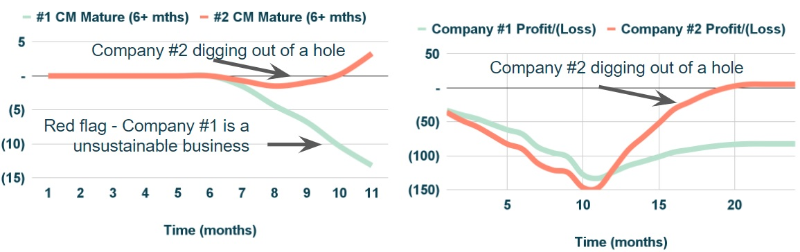

Summary
This note goes through the concept of contribution margin on a per unit basis, as a simple way to think about a Company's profitability. This will then be applied to specific business profiles in future notes.
Setting the Scene
Let’s imagine a hypothetical scenario with two companies:
- From a revenue perspective, both companies have exactly the same revenues and growth profile.
- From a contribution margin and a profit/(loss) perspective, Company Two’s financials are slightly worse.
Contribution Margin per “Unit of Cost”
The first step is to split CM costs in two buckets: (i) 100% variable regardless of revenue level and (ii) fixed costs up until a certain revenue level.
Figure 2: CM cost buckets.The second step is to then analyse each bucket independently:
- Fixed CM costs: the company pays for this cost within a certain capacity figure linked to revenues. For example, it could be the salary of a sales person. The agent can bring in up to a certain revenue level; every month the revenue generated changes but the salary paid remains the same. This is a simplification, as in practice there are several “Fixed CM costs”, each incurred for up to a certain revenue level.
- Variable CM costs: this could be for example an agreed % of revenues paid out as bonus to sales agents. Given that it is variable, it protects margins and therefore profitability whenever there is a decrease in revenues. However, it cannot be so high that nothing is left for the Company.
- Fixed CM costs: given the higher revenue per client, Company One has an advantage over Company Two (25% vs 45% of revenues).
- Variable CM costs: it is very clear that Company One’s costs are simply too high at 80% of revenues (vs 40% for Company Two).
Even with a more favourable position from a fixed costs perspective,
it will be impossible to become profitable, given that for each sales person
(or unit cost), Company One has a loss of (£600-1,400). If they add more
sales people, revenues will grow but the loss will only become worse over time.
It is very interesting to notice that many times important questions about a business’
profitability can be determined using a few key numbers. It is not necessary to use a complex spreadsheet
to draw conclusions.
Digging out of a Hole
Coming back to the previous example, over a 24 months period, both companies grew their revenues at exactly the same pace (from £79k to £2.7m) but the CM profile was completely different. By month 12, one would think that Company Two was in trouble but in fact a few quarters later, it managed to grow CM to cover Overheads.
 Figure 4: Key indicators and financials for Company 1 and Company 2.
Figure 4: Key indicators and financials for Company 1 and Company 2.
Based on the previous section, this is not a surprise, as Company One made a loss of (£600-1,400) per sales person per month, while Company Two was digging out of a hole (see figure below) as it grew its revenues and CM, as the number of sales people increased.
 Figure 5: Example of digging out of hole for Company Two (RHS).Conclusion
Contribution margin on a per unit basis is a very powerful way to think about a Company's profitability.
It simplifies everything and makes it easier to have key insights about a business.
More to come on this
in future notes.
If I can be helpful on anything, or if you have any comments or suggestions,
please do reach out: